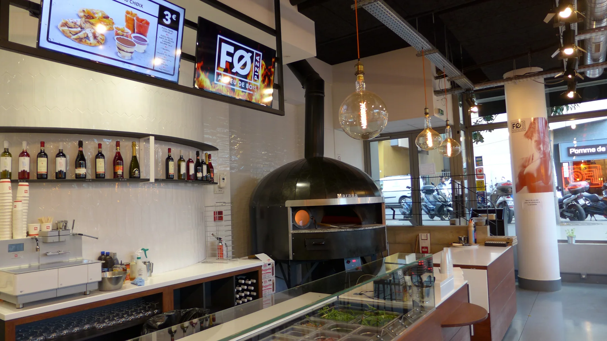

PARIS 13 · SACLAY Atelier de pizza libre
À vous la composition. À nous le feu.
Choisissez votre base, piochez parmi 65 ingrédients et composez sans recette imposée. On s’occupe de la cuisson au feu de bois.

PHOTO 01
Une composition libre.
Un bord bien saisi.
65ingrédients
au choix
au choix
2 minde cuisson
annoncées
annoncées
8,95 €prix de départ
annoncé
annoncé
Sur place · À emporter · Livraison
01 L’atelier ouvert
Rien à cacher.
Tout à choisir.
Le comptoir, les ingrédients et le four restent visibles. Vous savez ce qui entre dans votre pizza et vous décidez de la suite.

Une commande FØ tient en trois gestes. Pas besoin d’étudier une carte pendant dix minutes.
- 01
Choisissez la base
Tomate ou crème fraîche : donnez le ton.
- 02
Composez à vue
Ajoutez, retirez, mélangez. Les ingrédients sont devant vous.
- 03
Laissez faire le feu
Une cuisson rapide pour une pâte saisie et croustillante.
02 Le comptoir d’essai
Trouvez votre
direction.
Quelques choix pour préciser votre envie avant d’ouvrir la carte complète du restaurant.
VOTRE DIRECTIONAPERÇU D’INSPIRATION
Tomate · Pepperoni · Basilic
Base tomatePepperoniBasilic
La sélection finale s’effectue sur la carte du restaurant.
01
Votre base
Commencez simplement.
02
Quelques envies
Activez les ingrédients.
Vous ne savez pas par où commencer ?
Les 65 ingrédients et leurs disponibilités sont présentés sur le parcours de commande du restaurant sélectionné.

LE FOUR · PARIS 1304 Le feu en face
On prépare.
Vous regardez.
Chez FØ, le four n’est pas caché derrière une porte. Il fait partie du service, du rythme et du goût.
« Deux minutes de cuisson annoncées. Juste assez pour saisir la pâte, pas votre patience. »
65ingrédients au choix
2adresses franciliennes
05 Nos adresses
Même esprit.
Deux quartiers.
Choisissez votre restaurant avant de commander en livraison, à emporter ou de venir sur place.

Votre pizza peut encore être n’importe quoi.